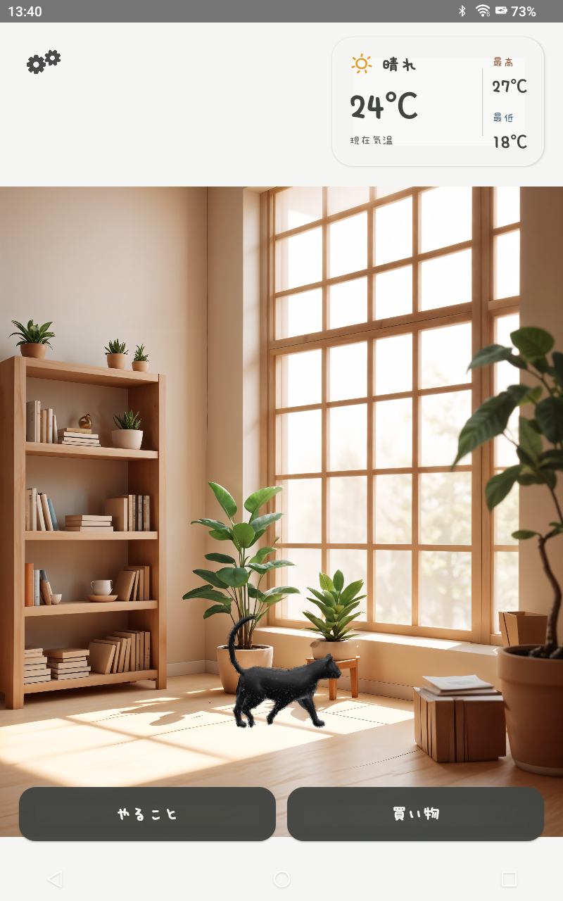
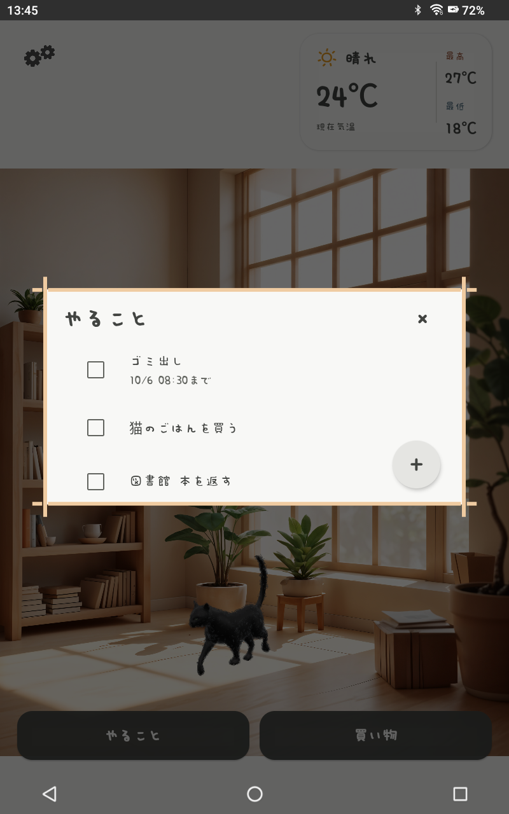
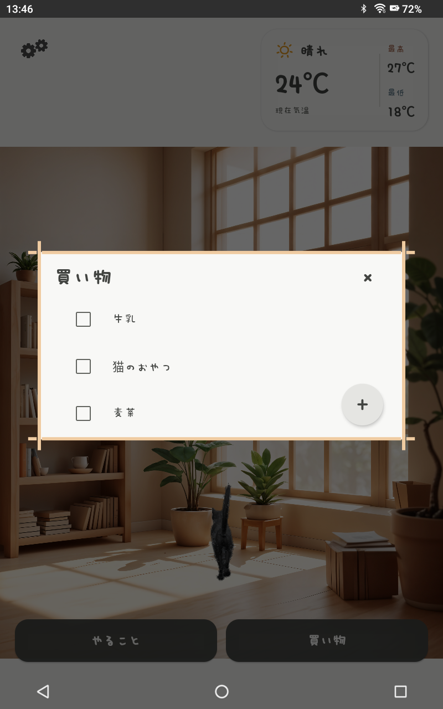
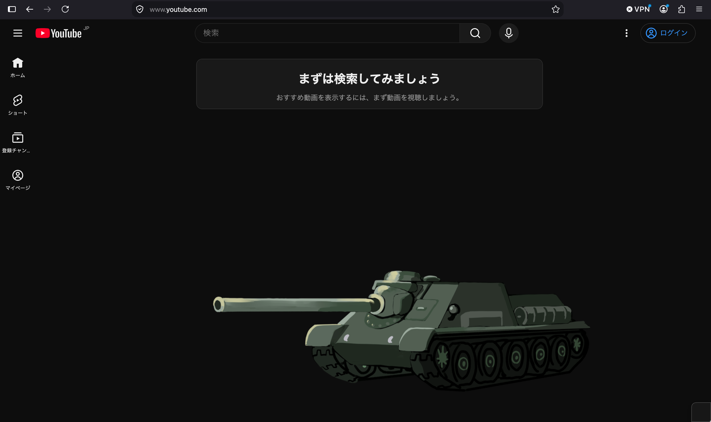
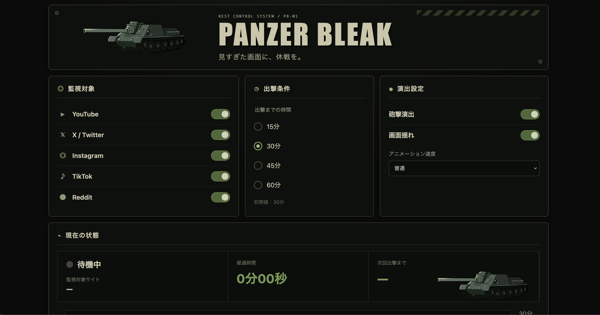

小さな黒猫と、気ままな毎日。
画面の中を自由に動き回る3Dの黒猫とふれあえるメモアプリです。
大切なタスクもリマインダーでお知らせ。
猫を眺めたり、触れたり。
いつもの暮らしに、ちょっとした楽しさを添えます。
個人開発と創作活動の記録。



小さな黒猫と、気ままな毎日。
画面の中を自由に動き回る3Dの黒猫とふれあえるメモアプリです。
大切なタスクもリマインダーでお知らせ。
猫を眺めたり、触れたり。
いつもの暮らしに、ちょっとした楽しさを添えます。


SNSを見すぎたら、SU-100がやってくる。
YouTubeやXなどの閲覧時間を計測し、設定した時間になると戦車が画面を横切って休憩を促すFirefox拡張機能です。
画像をアップロードするだけで、自分だけの漫画ビューアを作成できるWebツール。1枚表示・見開き表示・縦スクロールに対応し、背景画像やデザインもカスタマイズできます。完成したビューアはZIP形式で出力でき、自分のサイトに設置できます。
ツールを開く →